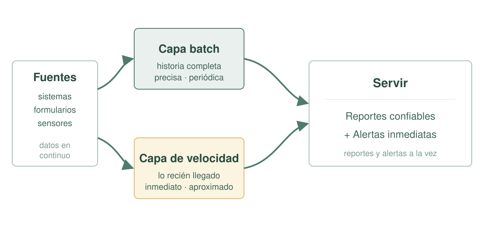
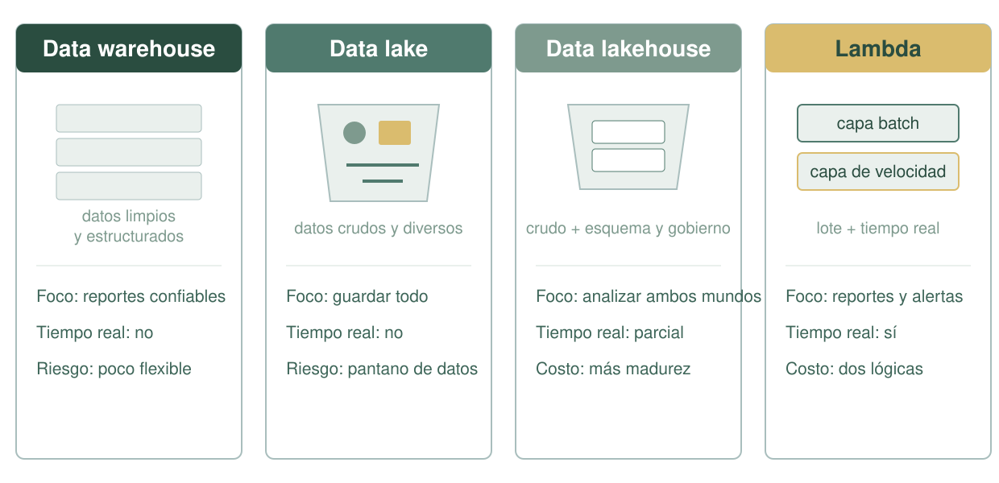
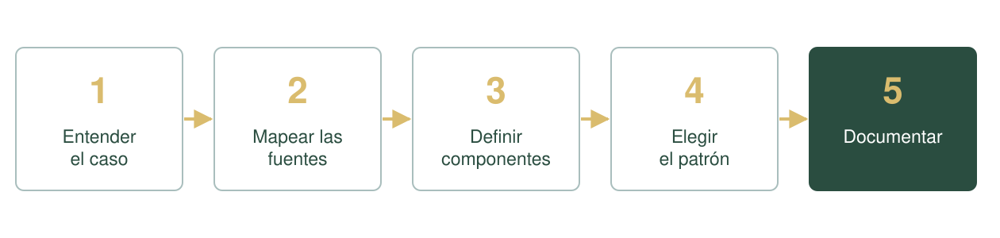

<!DOCTYPE html>
<html lang="es">
	<head>
		<meta charset="utf-8" />
		<meta name="viewport" content="width=device-width, initial-scale=1.0, maximum-scale=1.0, user-scalable=no" />

		<title>Sesión 5 — Arquitectura: patrones y diseño</title>

		<link rel="stylesheet" href="https://cdn.jsdelivr.net/npm/reveal.js@6.0.1/dist/reset.css" />
		<link rel="stylesheet" href="https://cdn.jsdelivr.net/npm/reveal.js@6.0.1/dist/reveal.css" />
		<link rel="stylesheet" href="assets/theme-egpp.css" />

	</head>
	<body>
		<div class="reveal">
			<div class="slides">
				<section data-markdown
					data-separator="\r?\n---\r?\n"
					data-separator-vertical="\r?\n--\r?\n"
					data-separator-notes="^Note:">
				<script type="text/template">
<!-- .slide: class="cover" -->
<div class="kicker">Ingeniería de Datos · IDT 601</div>
<h1>Arquitectura: patrones y diseño</h1>
<p class="lead">¿Qué patrones existen y cómo se diseña una arquitectura?</p>
<div class="mark">Bloque 3 · Sesión 5 · EGPP</div>
<div class="cover-side" aria-hidden="true"><div class="code-stack"><span>diseño =</span><span>caso</span><span>+ componentes + patrón</span></div></div>

Note:
- Dar la bienvenida y ubicar la sesión como el cierre práctico del Bloque 3 (Arquitectura de Datos).
- Recuperar la Sesión 4: ya conocemos qué es una arquitectura y cuáles son sus cuatro piezas; hoy vemos cómo se combinan en patrones probados.
- Anunciar el recorrido: cuatro patrones, comparativa, diseño paso a paso y taller con entrega.
- Aclarar que no hace falta programar; se trata de elegir con fundamento y documentar.
- **No olvidar:** avisar que hay una pausa de 10 minutos y que la jornada termina con un taller cuyo entregable se recoge.

---

<div class="topline"><span class="kicker">01 / Encuadre</span><span class="mark">Pregunta de arranque</span></div>
<div class="content single"><h2 class="slide-title">¿Para qué necesitan los datos?</h2>
  <p class="lead">¿Para reportes del mes pasado, para análisis en el momento, o para ambos?</p>
  <p class="body-copy">Anotemos las respuestas en la pizarra. Anticipan el criterio para elegir el patrón. Elegir y documentar: las dos tareas del arquitecto de datos.</p>
</div>
<div class="footer"><span>Encuadre</span><span>02</span></div>

Note:
- Lanzar el enganche: "¿necesitan sus datos para reportes del mes pasado, para análisis en el momento, o para ambos?" y anotar las respuestas.
- Nombrar las dos tareas del arquitecto: elegir con fundamento y documentar en un plano.
- **No olvidar:** dejar las respuestas escritas; se retoman en la comparativa y en el cierre.

---

<div class="topline"><span class="kicker">02 / Hoja de ruta</span><span class="mark">180 minutos</span></div>
<div class="content single"><h2 class="slide-title">Una sesión, cinco tramos</h2>
  <table class="type-table">
    <thead><tr><th>Momento</th><th>Tiempo</th><th>Qué haremos</th></tr></thead>
    <tbody>
      <tr><td>Patrones</td><td>35 min</td><td>Warehouse, lake, lakehouse y lambda.</td></tr>
      <tr><td>Comparativa</td><td>10 min</td><td>Criterios para elegir un patrón.</td></tr>
      <tr><td>Pausa</td><td>10 min</td><td>Receso.</td></tr>
      <tr><td>Diseño paso a paso</td><td>30 min</td><td>El proceso y la plantilla de diseño.</td></tr>
      <tr><td>Taller</td><td>75 min</td><td>Diseñar la arquitectura de un caso institucional.</td></tr>
      <tr><td>Cierre</td><td>10 min</td><td>Síntesis, dudas y puente a la Sesión 6.</td></tr>
    </tbody>
  </table>
</div>
<div class="footer"><span>Hoja de ruta</span><span>03</span></div>

Note:
- Leer la tabla en voz alta y fijar el contrato de tiempo.
- Explicar que el tramo de taller incluye el trabajo en equipos y la puesta en común.
- Señalar que la pausa cae después de la comparativa y antes del diseño paso a paso.
- **No olvidar:** anticipar el puente hacia la Sesión 6 (integración de datos).

---

<div class="topline"><span class="kicker">03 / Concepto</span><span class="mark">Qué es un patrón</span></div>
<div class="content">
  <div><h2 class="slide-title">¿Qué es un patrón de arquitectura?</h2><p class="body-copy">Una <strong>forma típica y probada</strong> de organizar los datos para un propósito. No se inventa cada vez: <strong>se elige</strong>. Hoy veremos cuatro.</p></div>
  <div><div class="card"><h3>Los cuatro</h3><p><strong>Data warehouse</strong> · <strong>Data lake</strong> · <strong>Data lakehouse</strong> · <strong>Lambda</strong></p><p class="muted">No son tecnologías: son formas de organizar el dato.</p></div></div>
</div>
<div class="footer"><span>Concepto</span><span>04</span></div>

Note:
- Definir un patrón de arquitectura como una forma típica y probada; no se inventa cada vez, se elige.
- Enumerar los cuatro que veremos.
- Fijar los criterios de elección: el caso, el volumen, la estructura del dato y la necesidad de tiempo real.
- **No olvidar:** subrayar que no hay un patrón mejor, solo uno adecuado para cada caso.

---

<div class="topline"><span class="kicker">04 / Patrones</span><span class="mark">1 de 4</span></div>
<div class="content">
  <div><h2 class="slide-title">Data warehouse</h2><p class="body-copy">Datos <strong>ya procesados, limpios y estructurados</strong>, listos para reportes. <strong>Esquema fijo</strong>, alta confiabilidad. Responde: <em>"¿cuánto recaudamos el trimestre pasado por departamento?"</em>.</p></div>
  <div><div class="card"><h3>Ejemplo</h3><p>Almacén institucional con recaudación tributaria mensual, depurada y validada para reportes de gestión.</p></div></div>
</div>
<div class="footer"><span>Data warehouse</span><span>05</span></div>

Note:
- Definir el warehouse: datos ya procesados, limpios y estructurados para reportes.
- Resaltar esquema fijo, alta confiabilidad y consultas ágiles.
- Reconocer el costo: transformar antes de guardar y poca flexibilidad ante datos nuevos.
- **No olvidar:** la confiabilidad se paga con trabajo previo de limpieza y con menor flexibilidad.

---

<div class="topline"><span class="kicker">04 / Patrones</span><span class="mark">2 de 4</span></div>
<div class="content">
  <div><h2 class="slide-title">Data lake</h2><p class="body-copy">Datos en <strong>forma cruda y original</strong>, de cualquier tipo y a gran escala. <strong>Esquema al leer</strong>, flexible, bajo costo por volumen. Responde: <em>"guardar todo lo que se genera, aunque no sepamos para qué"</em>.</p></div>
  <div><div class="card"><h3>Ejemplo</h3><p>Repositorio con lecturas de medidores de agua, logs de sistemas y documentos escaneados sin procesar.</p></div></div>
</div>
<div class="footer"><span>Data lake</span><span>06</span></div>

Note:
- Definir el lake: datos en su forma cruda y original, de cualquier tipo y a gran escala.
- Explicar el esquema al leer: la estructura se define al consultar, no al guardar.
- Nombrar el riesgo: sin gobierno se vuelve un "pantano de datos" (data swamp).
- **No olvidar:** el lake no elimina el orden; lo traslada del momento de guardar al momento de leer.

---

<div class="topline"><span class="kicker">04 / Patrones</span><span class="mark">3 de 4</span></div>
<div class="content">
  <div><h2 class="slide-title">Data lakehouse</h2><p class="body-copy"><strong>Combina</strong> la flexibilidad del lake con la estructura y el gobierno del warehouse. Permite guardar datos crudos <strong>y</strong> consultarlos con esquema en un mismo repositorio.</p></div>
  <div><div class="card"><h3>Ejemplo</h3><p>Datos crudos de trámites con esquema y gobierno, sobre los que se generan reportes confiables.</p></div></div>
</div>
<div class="footer"><span>Data lakehouse</span><span>07</span></div>

Note:
- Presentar el lakehouse como la combinación de la flexibilidad del lake con la estructura y el gobierno del warehouse.
- Ilustrar con datos crudos de trámites con esquema y gobierno.
- Señalar el costo: más herramientas y mayor madurez de gobierno.
- **No olvidar:** es la respuesta para quien quiere analizar sin perder el dato original.

---

<div class="topline"><span class="kicker">04 / Patrones</span><span class="mark">4 de 4</span></div>
<div class="content">
  <div><h2 class="slide-title">Arquitectura lambda</h2><p class="body-copy"><strong>Dos caminos en paralelo:</strong> una <strong>capa batch</strong> (la historia completa, precisa, cada cierto tiempo) y una <strong>capa de velocidad</strong> (lo que acaba de llegar, inmediato).</p></div>
  <div><div class="card"><h3>Ejemplo</h3><p>Tránsito: reportes históricos cada noche + alerta en tiempo real ante un congestionamiento.</p></div></div>
</div>
<div class="footer"><span>Lambda</span><span>08</span></div>

Note:
- Explicar los dos caminos: capa batch (historia completa, precisa) y capa de velocidad (lo recién llegado, inmediato).
- Dar el ejemplo del tránsito: reportes históricos cada noche y alerta inmediata ante un congestionamiento.
- Reconocer el costo: dos lógicas que mantener y a veces duplicar.
- **No olvidar:** el beneficio de cubrir ambos mundos se paga con mayor complejidad de operación.

---

<div class="topline"><span class="kicker">04 / Patrones</span><span class="mark">Lambda de cerca</span></div>
<div class="content single"><h2 class="slide-title">Los dos caminos de lambda</h2>
  
</div>
<div class="footer"><span>Lambda de cerca</span><span>09</span></div>

Note:
- Recorrer el esquema: las fuentes alimentan los dos caminos a la vez.
- La capa batch prioriza precisión; la capa de velocidad, inmediatez.
- **Esquema en pantalla (lambda):** a la izquierda, las fuentes; de ellas salen dos caminos paralelos: arriba la capa batch (historia completa, precisa, periódica) y abajo la capa de velocidad (lo recién llegado, inmediato). Ambos confluyen en «Servir: reportes confiables + alertas inmediatas». Enfatizar que son dos lógicas simultáneas sobre los mismos datos.
- **No olvidar:** ambas alimentan la misma capa de servicio (reportes y alertas).

---

<div class="topline"><span class="kicker">05 / Comparativa</span><span class="mark">Lado a lado</span></div>
<div class="content single"><h2 class="slide-title">Los cuatro, lado a lado</h2>
  <table class="type-table">
    <thead><tr><th>Patrón</th><th>Qué guarda</th><th>Foco</th><th>Tiempo real</th><th>Riesgo o costo</th></tr></thead>
    <tbody>
      <tr><td>Data warehouse</td><td>Procesado y limpio</td><td>Reportes</td><td>No</td><td>Poco flexible</td></tr>
      <tr><td>Data lake</td><td>Crudo y diverso</td><td>Guardar todo</td><td>No</td><td>Pantano de datos</td></tr>
      <tr><td>Data lakehouse</td><td>Crudo + esquema</td><td>Ambos</td><td>Parcial</td><td>Más madurez</td></tr>
      <tr><td>Lambda</td><td>Batch + velocidad</td><td>Ambos</td><td>Sí</td><td>Dos lógicas</td></tr>
    </tbody>
  </table>
</div>
<div class="footer"><span>Comparativa</span><span>10</span></div>

Note:
- Leer la tabla columna por columna: qué guarda cada patrón, su foco, el tiempo real y el riesgo.
- Contrastar: warehouse y lake no cubren tiempo real; el lakehouse lo cubre parcialmente; lambda sí.
- **No olvidar:** escribir en la pizarra "no hay uno mejor, hay uno adecuado".

---

<div class="topline"><span class="kicker">05 / Comparativa</span><span class="mark">Los cuatro patrones</span></div>
<div class="content single"><h2 class="slide-title">Un mismo problema, cuatro formas</h2>
  
</div>
<div class="footer"><span>Los cuatro patrones</span><span>11</span></div>

Note:
- Recorrer los cuatro paneles del esquema y conectar cada uno con su ejemplo ya visto.
- Repetir los criterios de elección: caso, volumen, estructura del dato y tiempo real.
- **Esquema en pantalla (los cuatro patrones):** cuatro columnas: warehouse (tablas limpias → reportes), lake (depósito crudo y diverso), lakehouse (crudo + esquema y gobierno) y lambda (capa batch + capa de velocidad). Cada columna indica qué guarda, su foco, el tiempo real y su riesgo. Recorrerlas y conectar con los ejemplos ya vistos.
- **No olvidar:** cerrar anunciando la pausa y anticipar que al volver empieza el diseño paso a paso.

---

<div class="topline"><span class="kicker">06 / Diseño</span><span class="mark">El proceso</span></div>
<div class="content single"><h2 class="slide-title">Diseñar es un proceso ordenado</h2>
  
  <p class="quote">El plano <em>no es</em> la casa: primero el diseño, después la tecnología.</p>
</div>
<div class="footer"><span>Diseño paso a paso</span><span>12</span></div>

Note:
- Presentar el diseño como un proceso ordenado de cinco pasos, no como una inspiración.
- Nombrar la secuencia: entender, mapear, definir componentes, elegir el patrón y documentar.
- **Esquema en pantalla (los cinco pasos):** cinco bloques numerados en fila —1 entender el caso, 2 mapear fuentes, 3 definir componentes, 4 elegir patrón, 5 documentar— unidos por flechas. Señalar que el orden importa: cada paso habilita el siguiente y el 5 (documentar) es el entregable.
- **No olvidar:** el diseño va antes de pensar en herramientas.

---

<div class="topline"><span class="kicker">06 / Diseño</span><span class="mark">Pasos 1 y 2</span></div>
<div class="content single"><h2 class="slide-title">El caso y las fuentes</h2>
  <div class="split">
    <div class="split-panel"><h3>Paso 1 · Entender el caso</h3><p>¿Qué necesita la institución? ¿Qué <strong>preguntas</strong> debe responder con datos? Ejemplo: reportar mensualmente el avance de los trámites de licencias.</p></div>
    <div class="split-panel"><h3>Paso 2 · Mapear las fuentes</h3><p>¿De dónde salen los datos y <strong>qué tipo</strong> son? Ejemplo: sistema de trámites (tablas), formularios web (JSON), documentos escaneados.</p></div>
  </div>
</div>
<div class="footer"><span>Pasos 1 y 2</span><span>13</span></div>

Note:
- Desarrollar el paso 1: qué necesita la institución y qué preguntas debe responder con datos.
- Desarrollar el paso 2: de dónde salen los datos y qué tipo son, retomando la Sesión 1.
- **No olvidar:** el tipo de dato condiciona cómo se almacena y se procesa; primero el caso, después los datos.

---

<div class="topline"><span class="kicker">06 / Diseño</span><span class="mark">Paso 3</span></div>
<div class="content">
  <div><h2 class="slide-title">Paso 3 · Definir los componentes</h2><p class="body-copy">Las <strong>cuatro piezas</strong> del plano: <strong>almacenamiento</strong> (dónde), <strong>procesamiento</strong> (cómo), <strong>catálogo</strong> (qué es) y <strong>gobernanza</strong> (quién y con qué reglas).</p></div>
  <div><div class="card"><h3>Ejemplo</h3><p>Base operacional + data warehouse + proceso nocturno + diccionario de datos + política de acceso.</p></div></div>
</div>
<div class="footer"><span>Paso 3</span><span>14</span></div>

Note:
- Definir los cuatro componentes con una pregunta cada uno.
- Dar el ejemplo completo y retomar la Sesión 4 para conectar la plantilla con las piezas conocidas.
- **No olvidar:** catálogo y gobernanza son capas transversales y no se pueden omitir.

---

<div class="topline"><span class="kicker">06 / Diseño</span><span class="mark">Paso 4</span></div>
<div class="content">
  <div><h2 class="slide-title">Paso 4 · Elegir el patrón</h2><p class="body-copy">Según el caso: <strong>warehouse</strong> → reportes confiables; <strong>lake</strong> → datos crudos y diversos; <strong>lakehouse</strong> → ambos; <strong>lambda</strong> → lotes + tiempo real.</p></div>
  <div><div class="card"><h3>Ejemplo</h3><p>Data warehouse para reportes mensuales confiables.</p></div></div>
</div>
<div class="footer"><span>Paso 4</span><span>15</span></div>

Note:
- Recordar las correspondencias y aterrizar el ejemplo: warehouse para reportes mensuales confiables.
- Pedir a los equipos que descarten explícitamente las alternativas, no solo que elijan una.
- **No olvidar:** la elección se justifica en el caso y no en preferencias o modas.

---

<div class="topline"><span class="kicker">06 / Diseño</span><span class="mark">Paso 5</span></div>
<div class="content single"><h2 class="slide-title">Paso 5 · Documentar</h2>
  <p class="body-copy">Dibujar el <strong>flujo</strong> desde la fuente hasta el uso, nombrar cada <strong>componente</strong> y registrar las <strong>reglas</strong> de gobernanza.</p>
  <table class="type-table">
    <thead><tr><th>Sección de la plantilla</th><th>Qué completar</th></tr></thead>
    <tbody>
      <tr><td>Caso y objetivo</td><td>Qué necesita y qué pregunta responde</td></tr>
      <tr><td>Fuentes de datos</td><td>De dónde salen y su tipo</td></tr>
      <tr><td>Componentes</td><td>Almacenamiento, procesamiento, catálogo, gobernanza</td></tr>
      <tr><td>Patrón elegido</td><td>Cuál y por qué</td></tr>
      <tr><td>Diagrama de flujo</td><td>Desde la fuente hasta el uso</td></tr>
      <tr><td>Reglas de gobernanza</td><td>Quién accede, calidad y seguridad</td></tr>
    </tbody>
  </table>
</div>
<div class="footer"><span>Paso 5</span><span>16</span></div>

Note:
- Presentar el paso 5 y recorrer la plantilla sección por sección.
- Explicar que la plantilla completa es el entregable del taller y que se evalúa su coherencia interna.
- **No olvidar:** documentar es tan importante como dibujar; un diseño sin documentar no se sostiene.

---

<div class="topline"><span class="kicker">07 / Taller</span><span class="mark">El caso</span></div>
<div class="content single"><h2 class="slide-title">Taller: la gobernación y la atención al ciudadano</h2>
  <p class="body-copy">Reclamos en <strong>tres sistemas</strong> (ventanilla, teléfono y web), inspecciones anotadas en papel e indicadores armados a mano en Excel. Se necesita un reporte mensual confiable <strong>y</strong> una alerta inmediata ante un reclamo crítico repetido en la misma zona.</p>
  <div class="cards">
    <article class="card"><h3>1. Objetivo y fuentes</h3><p>Definan el objetivo y listen fuentes y tipos.</p></article>
    <article class="card"><h3>2. Componentes y patrón</h3><p>Definan las cuatro piezas y elijan el patrón.</p></article>
    <article class="card"><h3>3. Diagrama y plantilla</h3><p>Dibujen el flujo y completen la plantilla.</p></article>
  </div>
  <p class="body-copy"><strong>Entregable:</strong> diagrama + plantilla + justificación del patrón. Equipos de 4–5 · 60 min de trabajo + 15 de puesta en común.</p>
</div>
<div class="footer"><span>Taller</span><span>17</span></div>

Note:
- Leer el caso y explicitar la meta doble: reporte mensual confiable y alerta inmediata.
- Dar la consigna y los tiempos: equipos de 4 a 5, 60 minutos de trabajo y 15 de puesta en común.
- **No olvidar:** circular entre equipos recordando las tres preguntas y asignar un énfasis distinto a cada uno.

---

<div class="topline"><span class="kicker">07 / Taller</span><span class="mark">Puesta en común</span></div>
<div class="content single"><h2 class="slide-title">Compartan y contrasten los diseños</h2>
  <div class="cards">
    <article class="card"><h3>1. Expongan</h3><p>Cada equipo presenta su diagrama y su patrón en 3–4 minutos.</p></article>
    <article class="card"><h3>2. Pregunten</h3><p>¿Por qué ese patrón? ¿Cómo garantizan la calidad? ¿Quién accede?</p></article>
    <article class="card"><h3>3. Contrasten</h3><p>Registren las distintas elecciones de patrón en la pizarra.</p></article>
  </div>
  <p class="quote">Se evalúa la <em>coherencia</em> entre caso, fuentes, componentes y patrón.</p>
</div>
<div class="footer"><span>Puesta en común</span><span>18</span></div>

Note:
- Cada equipo expone en 3–4 minutos: diagrama, componentes y patrón.
- El docente y los demás equipos preguntan por la justificación y el gobierno.
- **No olvidar:** valorar la presencia de catálogo y gobernanza en cada diseño.

---

<div class="topline"><span class="kicker">08 / En resumen</span><span class="mark">Cierre</span></div>
<div class="content single"><h2 class="slide-title">Elegir y documentar</h2>
  <div class="cards">
    <article class="card"><h3>Patrón</h3><p>No hay uno mejor; hay uno adecuado para cada caso.</p></article>
    <article class="card"><h3>Diseño</h3><p>Un proceso ordenado: caso → fuentes → componentes → patrón → documentación.</p></article>
    <article class="card"><h3>Entrega</h3><p>El diseño documentado evidencia que se integró todo el bloque.</p></article>
  </div>
  <p class="quote">Próxima sesión: la <em>integración de datos</em> — ETL/ELT, automatización y orquestación.</p>
</div>
<div class="footer"><span>Fin de la sesión</span><span>19</span></div>

Note:
- Repetir el mensaje central: no hay un patrón mejor, hay uno adecuado para cada caso.
- Recorrer el proceso de diseño y subrayar que la entrega es el diseño documentado.
- Anunciar la próxima sesión: integración de datos con ETL/ELT, automatización y orquestación.
- **No olvidar:** dejar claro que documentar el diseño es parte del trabajo, no un extra opcional.

---

<!-- .slide: class="dark" -->
<div class="topline"><span class="kicker">Fin</span><span class="mark">Ingeniería de Datos · IDT 601</span></div>
<div class="content single">
  <h2 class="slide-title">Gracias</h2>
  <p class="lead">Bloque 3 · Sesión 5 · Patrones y diseño</p>
  <p class="quote">El diseño entregado es la evidencia del bloque.</p>
</div>
<div class="footer"><span>EGPP · Escuela de Gestión Pública Plurinacional</span><span>20</span></div>

Note:
- Recoger las entregas del taller y cerrar el Bloque 3 con las tres ideas fuerza de la jornada.
- Agradecer la participación y abrir el espacio de preguntas.
- Recordar que la próxima sesión abre el Bloque 4 con la integración de datos.
- **No olvidar:** cerrar confirmando la próxima sesión y que el diseño entregado es la evidencia del bloque.
</script></section>
			</div>
		</div>

		<script src="https://cdn.jsdelivr.net/npm/reveal.js@6.0.1/dist/reveal.js"></script>
		<script src="https://cdn.jsdelivr.net/npm/reveal.js@6.0.1/dist/plugin/notes.js"></script>
		<script src="https://cdn.jsdelivr.net/npm/reveal.js@6.0.1/dist/plugin/markdown.js"></script>
		<script src="https://cdn.jsdelivr.net/npm/reveal.js@6.0.1/dist/plugin/highlight.js"></script>
		<script>
			Reveal.initialize({
				width: 1920,
				height: 1080,
				margin: 0,
				center: false,
				hash: true,
				plugins: [RevealMarkdown, RevealHighlight, RevealNotes],
			});
		</script>
	</body>
</html>
